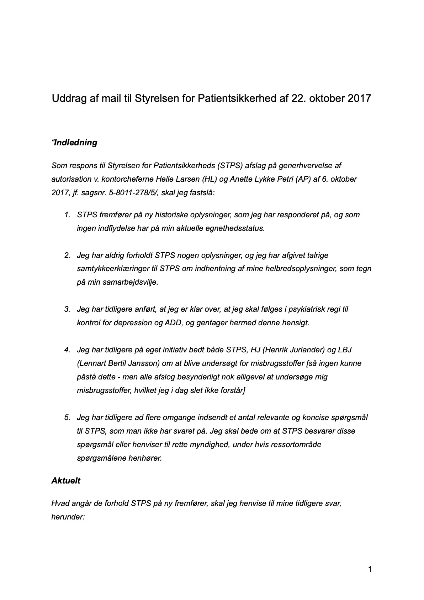
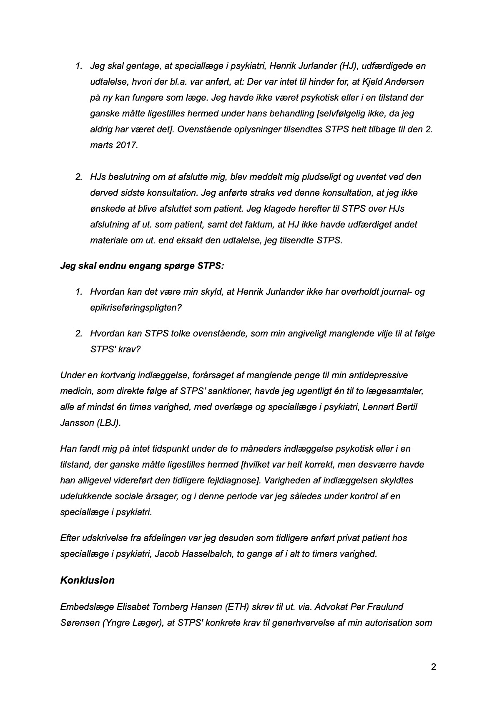
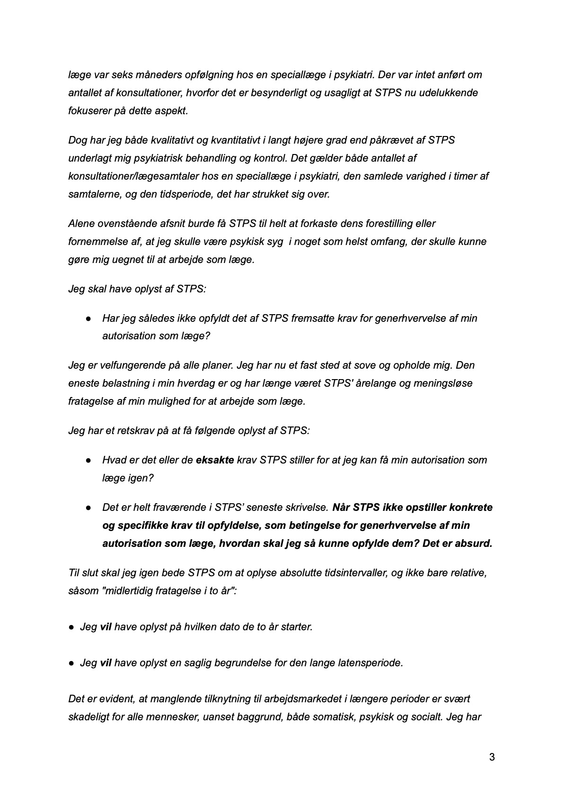
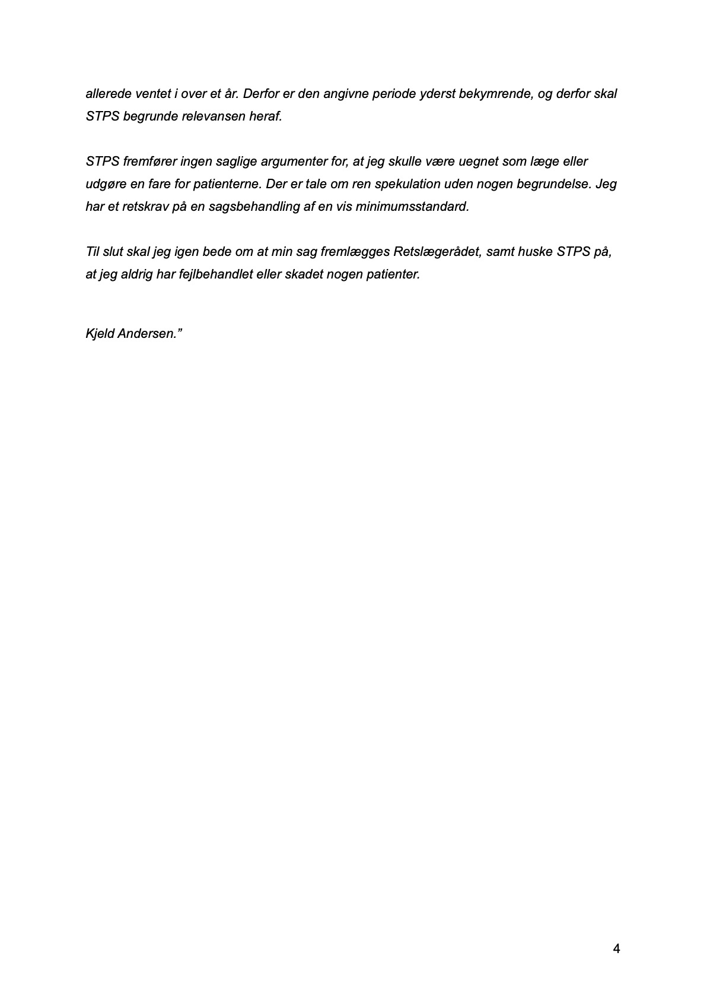

Mail til Rigshospitalet af 1. januar 2017
"Kære Rigshospital
Jeg skriver til jer, for at gøre opmærksom på forhold, som fandt sted på Glostrup Hospital og Rigshospitalet, som jeg mener var fuldstændigt urimelige. På daværende tidspunkt var Glostrup Hospital og Rigshospitalet ikke administrativt sammenlagt. Der var tale om FIUNIT/Klinisk Fysiologisk Afdeling på Glostrup og Onkologisk Afdeling på Rigshospitalet. Selv om afdelingerne er adskilt i tid og sted, er der imidlertid en sammenhæng.
Kort fortalt drejer det sig om:
1. Underlødig forskning, administration, økonomi, datahåndtering, vilkår og ansættelsesforhold for yngre læger, uforskyldt overskridelse af femårsfristen (Glostrup)
2. Ringe patientsikkerhed, arbejdsforhold, diskrimination på baggrund af uforskyldt overskridelse af femårsfristen, ulovlige ansættelsesforhold og fyring (Rigshospitalet)
Detaljerne fremgår af min til formålet oprettede hjemmeside:
Formålet med den er udelukkende at præsentere et materiale, der ellers ville være for stort til at blive sendt per mail. Der er ingen suspekte forhold ved hjemmesiden, ingen malware eller lignende, og jeg påtager mig naturligvis ansvaret for alle forhold herved.
Man skulle tro, at det havde hjulpet at inddrage Yngre Læger i samtlige af disse forhold; det gjorde det imidlertid ikke. På Glostrup var der hverken tillidsmand eller arbejdsmiljørepræsentant, og på Rigshospitalet ville TR ikke hjælpe mig (læge Kristine C).
Når jeg alligevel mener, at det er relevant at inddrage jer, så skyldes det, at der er mange uacceptable forhold, der vedrører patientsikkerhed og forskningsetiske- og juridiske forhold. Det meste fremgår af min hjemmeside, men ét af de grelleste tilfælde kan ikke offentliggøres, så jeg sender det kun til jer. Det er overlæge Egill Rostrups Google kalender med personidentificerbare og fortrolige sygdomsdata. Overlæge Egill Rostrup er i øvrigt den person, jeg på hjemmesiden omtaler som "Bivejlederen", idet han ikke vil have sit navn ud i offentligheden.
Jeg har vedhæftet selve Google kalenderen med denne mail, for at dokumentere et af de alvorligste forhold. Jeg håber, at I vil kigge på den, for jeg tror desværre, at jeg får svært ved at blive taget seriøst uden den fremlægges. Der er to måder hvorpå indholdet kan tilgås: 1. ved at importere Google kalenderen i jeres foretrukne kalenderprogram. 2. ved at åbne kalenderen i en teksteditor.
Venlig hilsen,
Kjeld Andersen"
Jeg anmeldte Camilla Elvekjær og Søren B J til Styrelsen for Patientsikkerhed og Rigspolitiet for dokumenterbare ulovligheder. Men fordi de del stod og står over dansk lov og fordi jeg var blevet stemplet som tosse af Camilla Elvekjær, ignorerede man mig. Så Styrelsen for Patientsikkerhed var fuldstændig ligglad med min patientsikkerhed og derfor ikke opgaven voksen. Det var endnu et justitsmord.
I et rigtigt retssamfund havde det haft konsekvenser for de ansatte i Styrelsen for Patientsikkerhed, at de sad dokumenterede ulovligheder øverhørige, men ikke i Danmark.
Mail til Styrelsen for Patientsikkerhed og Rigspolitiet af 11. marts 2017
"Kære Styrelsen for Patientsikkerhed og Rigspolitiet
Jeg skal indberette speciallæge i almen medicin Camilla Elvekjær og speciallæge i psykiatri Søren B J for uberettiget at have tilgået mine helbredsoplysninger.
Jeg har været tilknyttet begge læger, men ikke på de tidspunkter, jeg påklager, hvor de har tilgået mine oplysninger. Udover at jeg ikke har været tilknyttet lægerne i den pågældende periode, har ingen af dem haft mit mundtlige eller skriftlige sammenstykke til at tilgå mine oplysninger i perioden. Ingen af lægerne har kontaktet mig for at indhente mit sammenstykke eller oplyse mig om at de uberettiget har tilgået min helbredsoplysninger. Jeg erfarede det først for nyligt ved et tilfælde.
Det drejer sig konkret om følgende datoer (bilag 1 og 2):
Camilla Elvekjær
Den 18-11-16
Den 18-08-16
Søren B J
Den 23-06-16
Den 15-09-16
Jeg har dokumenterbart flyttet adresse fra Dronningens Tværgade 46, 1302 København K til 2610 Rødovre, og i den forbindelse skiftet læge fra Camilla Elvekjær til Malene Rahbek Holm den 27. juli 2016. Efter denne dato har Camilla Elvekjær ikke måtte tilgå mine helbredsoplysninger. Hvad angår Søren B J, så er det endnu længere tid siden jeg var tilknyttet ham, helt tilbage i 2015, og mit forløb er afsluttet i den periode.
Søren B J har i en mail til ut. anført at han ikke har journalført mit forløb hos ham, herunder ikke diagnosticeret mig eller udfærdiget et såkaldt udskrivningsbrev ("epikrise"). Jeg har anmodet ham om journalindsigt, hvilket han har afvist, med begrundelse om, at han ikke har ført journal på mig. Han har ikke desto mindre udskrevet medicin til mig, og han har over en længere periode haft mig i et behandlingsforløb med flere fremmøder i hans konsultation.
Jeg skal igen anmode om fuld aktindsigt i mit forløb hos Søren B J. Jeg skal påklage, at han ikke tidligere har efterkommet min anmodning. Jeg skal påklage at han efter eget udsagn ikke har ført journal over mit forløb hos ham (som var et formelt forløb, hvor han fik en ydelse af sygesikringen for at have mig i behandling), herunder ikke givet mig en diagnose til trods for at han har behandlet mig og udskrevet medicin til mig, samt har undladt at udfærdige et udskrivningsbrev ved afslutning af mit forløb.
Jeg skal påklage at Camilla Elvekjær i sin udfærdigelse af erklæring om tvangsindlæggelse af mig, har refereret psykiater Søren B J for at skulle have diagnosticeret mig med "paranoid psykose". Dette er forkert. Jeg har kontaktet Søren B J for at få ham til at bekræfte rigtigheden af dette udsagn, da det var min opfattelse, at han aldrig på noget tidspunkt have oplyst mig om dette. Som nævnt ovenfor har Søren B J oplyst, at han aldrig har givet mig en diagnose af nogen art. I forbindelse med mit forløb hos ham, fortalte han mig dog flere gange, at jeg led at svær kronisk stress.
Udover Søren B Js eget udsagn om manglende diagnoseafgivelse, kan Camilla Elvekjærs påstand om, at han (Søren B J) skulle have ment, at jeg led af paranoid psykose afvises af den årsag, at Søren B J i givet fald havde haft pligt til allerede i 2015 at 1. oplyse mig om dette, samt 2. om nødvendigt tvangsindlægge mig mhp. behandling. Dette skete som bekendt aldrig.
Jeg tillægger Camilla Elvekjærs udsagn om, at jeg i følge Sørenn Buus Jensen skulle have lidt af paranoid psykose betydelig og afgørende vægt, som berettigelse af hendes tvangsindlæggelse af mig den 1. hhv. 3. juni 2016. Jeg tillægger desuden dette udsagn udslagsgivende betydning ved Byrettens og Østre Landsrets afgørelse vedr. min anke af berettigelsen af tvangsindlæggelsen, hvor der i begge instanser blev dømt til min ugunst. Jeg skal påklage at Camilla Elvekjær har opdigtet det, hun refererer Søren B J for at skulle have udtalt. Jeg mener umiddelbart at der er tale om dokumentfalsk, og at konsekvensen heraf har haft katastrofale konsekvenser for mig, idet det er direkte årsag til, at jeg ikke må arbejde som læge, samt at min fremtidige karriere og tilværelse er ødelagt.
Jeg skal endnu engang indberette Camilla Elvekjær til Styrelsen for Patientsikkerhed, da jeg mener at hun er til fare for sine patienter, som følge af en udtalt paranoid personlighedsforstyrrelse eller regelret skizofreniform kronisk, vedvarende psykose. Jeg er ikke klar over, om Camilla Elvekjær har kontaktet Søren B J eller omvendt, men det er nærlæggende at antage. Jeg har mig bekendt aldrig givet sammenstykke til at de har måtte kontakte hinanden. Hvis man havde spurgt mig ad, havde jeg straks godkendt det, men det var bare ikke tilfældet.
Da jeg efter egen opfattelse, og som konsekvens af Camilla Elvekjærs fejlbehandling og overgreb imod mig, pt. lider af akut angst, muligvis PTSD, skal jeg bede Københavns Vestegns Politi, Rigspolitiet og Styrelsen for Patientsikkerhed om at tage hensyn til eksempelvis min svarlatens. Jeg undskylder og jeg ved at det mildest talt må være irriterende, men jeg er kun et menneske. Derudover lever jeg under uudholdelige sociale vilkår, jeg er truet på min eksistens, har nogen til at hjælpe mig med formelle anliggender, og senest i dag, den 11. marts 2017, har jeg fået lukket min konto i Lægernes Bank.
Jeg gør alt, hvad der er menneskeligt muligt og jeg håber på og beder om jeres forståelse.
Jeg giver selvfølgelig alle parter ubegrænset adgang til alle oplysninger om mig.
Venlig hilsen,
Kjeld Andersen."




Billeder. Styrelsen for Patientsikkerheds justitsmord.


.jpg)